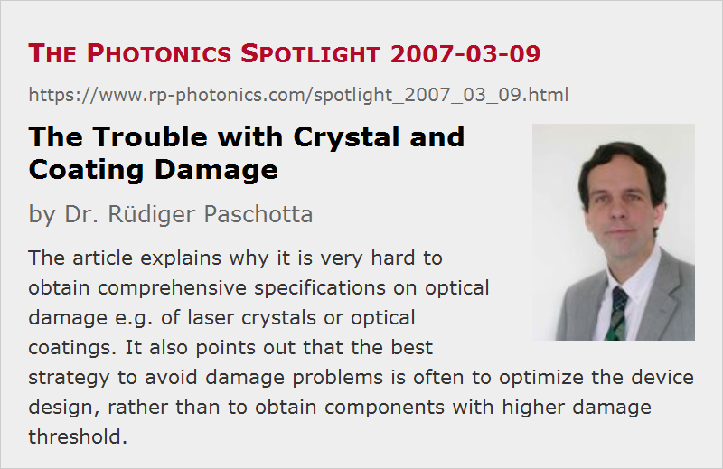

The Trouble with Crystal and Coating Damage
Posted on 2007-03-09 as a part of the Photonics Spotlight (available as e-mail newsletter!)
Permanent link: https://www.rp-photonics.com/spotlight_2007_03_09.html
Author: Dr. Rüdiger Paschotta, RP Photonics Consulting GmbH
Abstract: The article explains why it is very hard to obtain comprehensive specifications on optical damage e.g. of laser crystals or optical coatings. It also points out that the best strategy to avoid damage problems is often to optimize the device design, rather than to obtain components with higher damage threshold.

Ref.: encyclopedia articles on laser-induced damage, nonlinear crystal materials, dielectric coatings, laser-induced breakdown, laser design
Here I am talking about some very nasty problems in laser technology, but in the last paragraph you will also learn about solutions.
Laser crystals as well as nonlinear crystals and laser mirrors are often used and operated under conditions where laser-induced damage may occur – in many cases laser-induced damage (e.g. laser-induced breakdown), although there are other ways to kill crystals. The damage may occur in the crystal material, or only at surface, or in dielectric coatings such as anti-reflection coatings. Even if components fulfill the basic optical specifications, damage issues can bring you to the highest level of frustration. It is not only the destructive nature of these phenomena, but also their limited predictability and the frequent lack of useful specifications, what can cause real trouble.
For the manufacturers, it is actually quite a hard task to provide damage specifications. After all, there can be no specification without extensive lab testing, and that can hardly cover a huge parameter space. Laser-induced damage actually depends on many factors: not only peak intensity or fluence and laser wavelength, but also pulse duration and possibly even pulse repetition rate (or the number of pulses). In some cases you have to add the temperature as another important parameter, and you may also kill a coating simply by cycling the crystal temperature up and down often enough.
To cover at least part of that huge parameter space, you need suitable laser sources, providing high enough peak powers at a certain wavelength, also a high beam quality (no hot spots!) and power stability, and hopefully a widely tunable pulse duration. But don't forget to care about a solid automated approach for monitoring damage on many spots of your samples. This can involve to record levels of scattered light, transmitted light, or whatever can be considered reasonable given the concrete circumstances. Finally, provide plenty of samples and all the time required for destroying all of them. And repeat everything each time you have introduced the slightest modification e.g. in the fabrication conditions. You got the flavor?
We are sometimes quick to blame the manufacturers for missing data, but when asked to pay the mentioned investigations, we would probably at least hesitate.
I suppose that in many cases where the crystal and coating manufacturers cannot afford to do extensive damage measurements, the best data are available at the sites of some users, such as laser manufacturers. But guess whether these would be happy to tell the public about details of obtained damage thresholds, variations between products from different producers, etc. So even if some significant efforts are undertaken, the results will often not find their way into publications, and others will have to acquire such data themselves.
However, there are ways to escape these nasty problems. The basic principle is to circumvent them, rather than to solve them. The first thing to do is to check what intensity (or fluence) levels are actually required for achieving the wanted function, and whether there are reasonable ways to reduce the burden on the optics. For example, efficient nonlinear frequency conversion often doesn't require the crystal to be hit that hard, and laser resonators can be designed to avoid too high intensities on the laser mirrors and other optics, even though this might involve certain trade-offs (e.g. with the possible resonator length). It can be a silly and very costly mistake to try with ill-designed prototypes or even products, operating in an unsafe regime, to get defect devices returned by the customer, and spend enormous amounts of time with waiting for new components (with hopefully higher damage threshold), repairing lasers, shipping equipment, etc. Instead, one should get an experienced laser or nonlinear optics expert to do a proper design, based on a solid quantitative understanding of all relevant issues, before any significant money and time is spent on prototypes or even production. But some people learn this lesson only through sufficient pain …
This article is a posting of the Photonics Spotlight, authored by Dr. Rüdiger Paschotta. You may link to this page and cite it, because its location is permanent. See also the RP Photonics Encyclopedia.
Note that you can also receive the articles in the form of a newsletter or with an RSS feed.
Questions and Comments from Users
Here you can submit questions and comments. As far as they get accepted by the author, they will appear above this paragraph together with the author’s answer. The author will decide on acceptance based on certain criteria. Essentially, the issue must be of sufficiently broad interest.
Please do not enter personal data here; we would otherwise delete it soon. (See also our privacy declaration.) If you wish to receive personal feedback or consultancy from the author, please contact him e.g. via e-mail.
By submitting the information, you give your consent to the potential publication of your inputs on our website according to our rules. (If you later retract your consent, we will delete those inputs.) As your inputs are first reviewed by the author, they may be published with some delay.
|  |
If you like this page, please share the link with your friends and colleagues, e.g. via social media:
These sharing buttons are implemented in a privacy-friendly way!